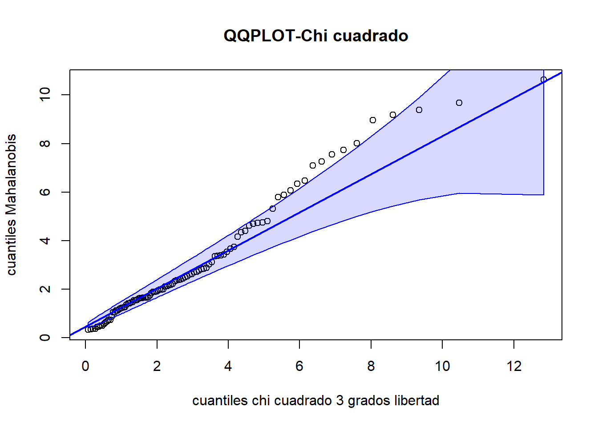

X1 = rnorm(50, mean = 2, sd = sqrt(8))
X2 = rnorm(50, mean = -1, sd = sqrt(17))
X3 = rnorm(50, mean = 3, sd = 3)
X4 = rnorm(50, mean = 2, sd = 2)
# Definimos X5 con la combinación dada:
X5 = 2*X1+X2+3*X4Ejercicios de estadística multivariante, parte I
20582- Análisis de Datos para el GMAT
Problema 1
Simula un conjunto de datos que tenga 5 variables \(X_1, X_2, X_3, X_4, X_5\), con 50 observaciones que sigan distribuciones normales con diferentes medias y varianzas cada una. Establece que una o más de las variables sea una combinación lineal de las otras. Por ejemplo, puedes definir que: \(X_5 = 2X_1 + 3X_2\). Verifica que se cumple el teorema de la dimensión.
Respuesta
Definimos 4 medias \(\mu = (2, -1, 3, 2)\) para nuestras variables \(X_1, X_2, X_3, X_4\) y cuatro varianzas \(\sigma_1^2 = 8, \sigma_2^2 = 17, \sigma_3^2 = 9, \sigma_4^2 = 4\). Ahora supongamos que nuestra variable aleatoria \(X_5\) es la siguiente combinación lineal: \[ X_5 = 2X_1 + X_2 + 3X_4 \] Veamos pues si se cumple el teorema de la dimensión para el siguiente conjunto de muestras:
Entonces ahora definimos nuestra matriz de datos y calcular su rango:
M <- matrix(c(
X1, X2, X3, X4, X5), ncol = 5, byrow = FALSE
)
rango <- qr(M)$rank
print(rango)[1] 4Entonces podemos observar que en nuestra matriz de 5 variables tiene rango 4. Entonces una variable es combinación lineal de las otras como nos verifica el teorema de la dimensión.
Recordemos el enunciado del Teorema de la dimensión ¿?¿?¿ \(\textit{}\)
Problema 2
Simula un conjunto de datos \(X\) con 4 variables y 50 observaciones que sigan distribuciones normales con diferentes medias y varianzas.
Define una matriz de transformación lineal \(T\) de escalamiento (solo tiene valores diferentes de cero en su diagonal, lo que implica que cada variable se escala de manera independiente sin interacción con las otras variables), de la siguiente forma:
Escala la primera variable por 2.
Escala la segunda variable por 0.5.
Escala la tercera variable por 1.5.
Mantener la cuarta variable sin cambios.
Ahora, transforma la matriz de datos \(X\) en una nueva matriz \(Y = X T\). Calcula el vector de medias \(\mu_Y\) de las variables transformadas y la matriz de covarianzas \(\Sigma_Y\). Verifica tus resultados con las funciones colMeans() y cov() de R.
Respuesta
Para este problema seguiremos con nuestro conjunto de datos definido por nuestras cuatro variables \(X_1,X_2,X_3\) i \(X_4\), ahora simplemente eliminamos de la matriz la última columna ya que no importa información relevante para el análisis de datos.
M <- M[,c(1,2,3,4)]Ahora definimos las matrices de transformaciones lineales que cumpla las condiciones del enunciado:
T <- matrix(c(
2, 0, 0, 0,
0, 0.5, 0, 0,
0, 0, 1.5, 0,
0, 0, 0, 1), ncol = 4, byrow = TRUE)
Y <- M%*%TCalculamos el vector de medias y la matriz de covarianzas de nuestra matriz transformada definiendo primero nuestra función y después lo comparamos con la función colMeans() y cov().
# Definimos la funcion covarianza
covarianza <- function(X,Y){
# X e Y son dos vectores muestrales
n = length(X)
mx = mean(X)
my = mean(Y)
V = 0
for (i in 1:n){
V = V + (X[i]-mx)*(Y[i]-my)
}
V = V/(n-1)
return(V)
}
# Calculamos el vector de medias
v_medias = c()
for (i in 1:4){
v_medias <- c(v_medias, mean(Y[,i]))
}
# Calculamos la matriz de cov
M_cov = matrix(rep(0,16), ncol = 4)
for (j in 1:4){
for (i in 1:4){
M_cov[i,j] = covarianza(Y[,i],Y[,j])
}
}
# Obtenemos nuestros resultados:
v_medias[1] 3.7009315 -0.3448293 3.7289174 2.3864308M_cov [,1] [,2] [,3] [,4]
[1,] 37.020816 -1.9593027 -7.5109546 2.8827287
[2,] -1.959303 2.8223977 -0.5644088 -0.3484975
[3,] -7.510955 -0.5644088 17.8927251 -1.2934513
[4,] 2.882729 -0.3484975 -1.2934513 4.9222647Ahora comparemos con las funciones ya implementadas de R:
v_mean = colMeans(Y)
M_cov2 = cov(Y)
v_mean[1] 3.7009315 -0.3448293 3.7289174 2.3864308M_cov2 [,1] [,2] [,3] [,4]
[1,] 37.020816 -1.9593027 -7.5109546 2.8827287
[2,] -1.959303 2.8223977 -0.5644088 -0.3484975
[3,] -7.510955 -0.5644088 17.8927251 -1.2934513
[4,] 2.882729 -0.3484975 -1.2934513 4.9222647Problema 3
Genera una matriz de datos simulados de tamaño \(100 \times 3\) con distribución normal multivariante.
Calcula la distancia de Mahalanobis para cada observación con respecto a la media del conjunto de datos.
Considera la matriz de transformación lineal \(T\) que mezcla las variables mediante rotaciones y escalamientos. Por ejemplo, puedes definir la matriz de transformación expresada de la siguiente forma:
\[T = \begin{pmatrix} 1.2 & 0.3 & 0.0 \\ 0.2 & 1.1 & 0.0 \\ 0.0 & 0.0 & 1.5 \end{pmatrix}\]
Aplique la transformación a la matriz de datos y calcule la distancia de Mahalanobis para cada observación con respecto a la media del conjunto de datos transformado.
¿Son las distancias de Mahalanobis iguales antes y después de la transformación lineal? Explica.
La distancia de Mahalanobis al cuadrado debería seguir una distribución \(\chi^2\) con \(p\) grados de libertad, donde \(p\) es el número de variables. Verifica si esto se cumple en tu caso. Justifica tu respuesta en función del test estadístico apropiado y un gráfico.
Respuesta al apartado a
Creamos nuestro conjunto de datos:
X1 <- rnorm(100, mean = 3, sd = 3)
X2 <- rnorm(100, mean = 2, sd = 6)
X3 <- rnorm(100, mean =-1, sd = 2)
M_data <- matrix(c(X1,X2,X3),ncol = 3, byrow = FALSE)Calculamos la distancia de Mahalanobis para cada observación respecto a la media del conjunto de datos (suponemos que la media del conjunto de datos se refiere a la media de todos los datos de la matriz):
M_datos <- matrix(c(X1,X2,X3),ncol=3,byrow = FALSE)
v <- colMeans(M_datos)
M_cov <- cov(M_data)
S_inv <- solve(M_cov)
distancias = c()
for (i in 1:100){
distancias = c(distancias, (M_datos[i,]-t(v))%*%S_inv%*%t(M_datos[i,]-t(v)))
}
distancias_mah <- matrix(distancias, ncol = 1, byrow = FALSE)Definimos ahora una transformación lineal cualquiera:
[,1] [,2] [,3]
[1,] 1.0 0.1 0
[2,] 0.4 1.1 0
[3,] 0.2 0.0 2Calculemos ahora la distancia de Mahalanobis respecto el vector de medias, y comparamos con las distancias ya calculadas.
# Calculamos la distancia de Mahalanobis para Y:
v <- colMeans(Y)
MY_cov <- cov(Y)
SY_inv <- solve(MY_cov)
distancias = c()
for (i in 1:100){
distancias = c(distancias, (Y[i,]-t(v))%*%SY_inv%*%t(Y[i,]-t(v)))
}
distancias_mah_Y <- matrix(distancias, ncol = 1, byrow = FALSE)
# Calculemos si son iguales las distancias
# Permitimos un error de computación 1e-12
tol = 1e-12
errores = distancias_mah-distancias_mah_Y
iguales = TRUE
for (i in 1:100){
if (errores[i]> tol){
iguales = FALSE
}
}
if (iguales){
print('La distancia de Mahalanobis no se ha visto modificada')
}else{
print('Hay diferencias')
}[1] "La distancia de Mahalanobis no se ha visto modificada"Como podemos observar la distancia de Mahalanobis no se ha visto afectada por la transformación lineal, ya que la que hemos definido és invertible. Tiene alguna explicación más rigurosa?
Respuesta al apartado b
Para responder este apartado realizaremos un contraste de bondad de ajuste para ver si nuestro vector de distancias de Mahalanobis viene de una variable aleatoria que sigue una distribución \(\chi^2\) con 3 grados de libertad.
Lo primero que podemos hacer es una visualización gráfica con un QQPlot de la libreria car.
car::qqPlot(distancias_mah, distribution = 'chisq',df = 3, main = 'QQPLOT-Chi cuadrado',ylab = 'cuantiles Mahalanobis', xlab = 'cuantiles chi cuadrado 3 grados libertad', id = FALSE, grid = FALSE)
Como queremos realizar el contraste de bondad de ajuste con una distribución continua realizaremos el contraste de Kolmogorov-Smirnov con la función ks.test().
test = ks.test(distancias_mah, 'pchisq',df = 3)
print(test)
Asymptotic one-sample Kolmogorov-Smirnov test
data: distancias_mah
D = 0.078622, p-value = 0.5667
alternative hypothesis: two-sidedCon el p-valor que hemos obtenido no podemos rechazar nuestra hipótesis. Sería verosimil que nuestros datos sigan una distribución chi cuadrado con tres grados de libertad.